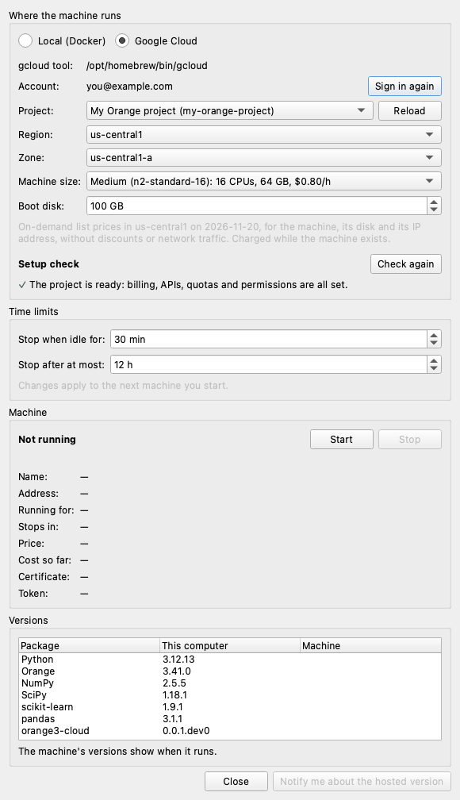

Cloud widgets
The Cloud widgets run heavy computation on a machine in your own cloud account (Google Cloud, AWS or Azure), or in Docker on your computer. The data stays on the machine, and every result is computed on all its rows.
Start a machine
Every Cloud widget has a Cloud box at the top. It shows whether a machine is connected, and after each job what it ran with (the versions of Orange and scikit-learn and the machine), how long it took and, on Google Cloud, AWS and Azure, what it cost. Click Cloud settings… to start or stop the machine:
- Where the machine runs: Google Cloud (sign in, choose the project, region, zone, machine size and disk; the setup check says what is missing), AWS (choose the AWS CLI's profile, sign in, choose the region, machine size and disk; the setup check says what is missing), Azure (sign in with the Azure CLI, choose the subscription, region, machine size and disk; the setup check says what is missing), or Local (Docker) on this computer, free, with Docker Desktop or OrbStack running.
- Time limits: the machine stops by itself when idle (30 minutes by default) and after at most 12 hours. When you quit Orange, the Cloud widgets cancel their jobs. If Orange crashes, or the laptop sleeps, the machine cancels its jobs itself once it hasn't heard from Orange for the idle time, and then stops when it has been idle that long.
- Machine: Start and Stop, the machine's state, its price and its cost so far.
- Versions: the machine installs your exact versions of Python, Orange and your packages; this table compares them.

Connection settings are kept in Orange's settings, never in workflows. The setup guides describe how to set up Google Cloud, AWS and Azure.
Cloud tables and Orange's own widgets
Cloud File's output is a cloud table: Orange sees its columns and one placeholder row in which every value is missing, and the rows stay on the machine.
- Orange's widgets that change data, such as Select Columns, Select Rows, Feature Constructor and Continuize, record their steps, and the machine replays them on all rows.
- Steps that learn from the data (normalizing, imputing, PCA, ...) go through Cloud Preprocess.
- Feature scores and selection by score go through Cloud Rank, discretizing through Cloud Discretize, and removing unused values and constant columns through Cloud Purge Domain. Orange's own Rank, Discretize and Purge Domain see only the placeholder row: they stop with an error that names the Cloud widget to use, or give the wrong columns.
- Edit Domain's "As categorical" and "Merge infrequent" go through Cloud Categories, and Create Class through Cloud Create Class: on a cloud table, Orange's own versions see only the placeholder row.
- Widgets that look at or compute from data see only the placeholder row: use the Cloud widgets below instead. Learner widgets connect their Learner output, not data.
The list of supported widgets says which of Orange's widgets work on cloud data and what to use for the others.
Messages
- Not connected to a cloud machine: start one with Cloud settings….
- This is local data, not a cloud table: the input came from a widget that gives plain local data (a sample, merged rows, ...).
- This cloud table is no longer available: the machine that held it has stopped. Start a machine and load the data again with Cloud File (click Load).
- The cloud machine ran out of memory: choose a larger machine size in Cloud settings, or use less data.
- The machine cancelled the job: Orange hadn't been in touch for 30 minutes: Orange didn't reach the machine for as long as the idle time, for example while the laptop slept, so the machine stopped the job, which nobody seemed to wait for. Run the widget again.
- Orange's widgets can't compute statistics of a cloud table on this computer (in Orange's error report): one of Orange's own widgets, such as Rank, Discretize or Purge Domain, tried to count the values of the placeholder row. Use the Cloud widget that the message names.